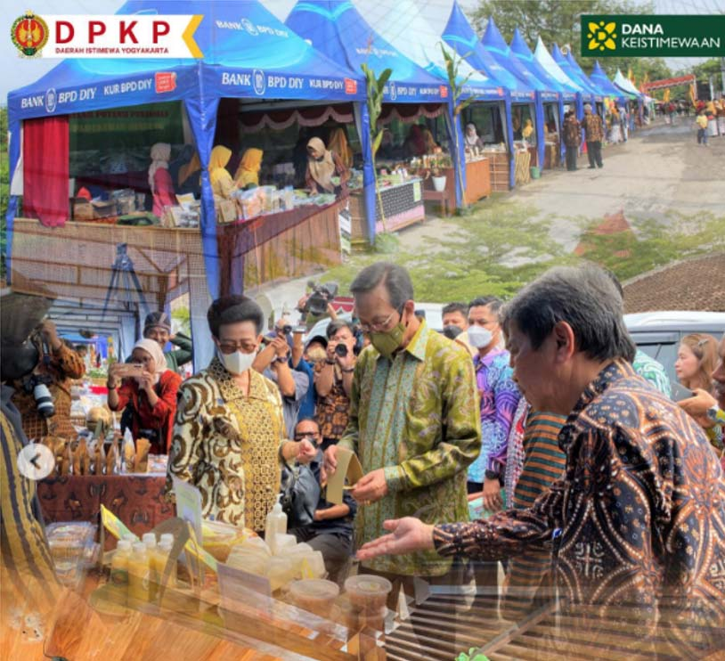

Ketersediaan pangan yang cukup secara nasional ternyata tidak menjamin adanya ketahanan pangan tingkat wilayah (regional), tingkat Kalurahan dan rumah tangga individu. Lumbung Mataraman perlu diperluas lingkupnya menjadi skala yang lebih luas dengan konsep integrated farming dalam upaya mendukung ketersediaan pangan dan perekonomian bagi masyarakat di Kalurahan. Lumbung Mataraman bukanlah bangunan fisik tetapi lumbung pangan hidup yang berbasis dari rumah tangga.
Lumbung mataraman Kalurahan merupakan perluasan lumbung mataraman tingkat Kalurahan yang dapat mendukung ketahanan pangan, kemandirian pangan, dan kedaulatan pangan di wilayah. Setiap Kalurahan memiliki potensi baik potensi fisik yang berupa tanah, air, iklim, lingkungan geografis, pertanian, dan sumber daya manusia, serta potensi non-fisik berupa masyarakat dengan corak dan interaksinya.
Lumbung Mataraman sudah berjalan beberapa tahun di DIY. Falsafah dari lumbung mataraman yaitu "Nandur apa sing di pangan, Mangan apa sing ditandur" atau artinya tanam yang dimakan, makan yang ditanam. Dari falsafah itu, diharapkan masyarakat mau menanam tanaman yang bisa dimakan. Mulai dari menanam tanaman sayur dan buah serta memelihara ternak dan ikan dengan memanfaatkan lahan pekarangan. Harapannya lumbung mataraman menjadi percontohan untuk mengatasi persoalan pangan di dalam keluarga. Lumbung Mataraman menghidupkan kembali tradisi pertanian di Yogyakarta yaitu memanfaatkan lahan pekarangan rumah tangga untuk menyediakan kebutuhan pangan dengan prinsip: kemandirian pangan, diversifikasi pangan berbasis sumber pangan lokal, pelestarian sumber daya genetik pangan, dan kebun bibit. Pengelolaan pertanian dalam bentuk kerjasama ekonomi dari sekelompok petani dengan orientasi agribisnis melalui konsolidasi pengelolaan lahan sehamparan dengan tetap menjamin kepemilikan lahan pada masing-masing petani, akan berdampak terhadap efisiensi usaha tani, standarisasi mutu, dan efektivitas serta efisiensi manajemen pemanfaatan sumber daya.
Pelaksanaan kegiatan Januari 2022 - 2023 (sekarang) Peresmian di tanggal 29 desember 2022
Apresiasi langsung terhadap kegiatan lumbung mataraman belum ada namun, Daerah Istimewa Yogyakarta meraih Penghargaan Terbaik 1 Pencapaian Skor Pola Pangan Harapan (PPH) Tingkat Nasional pada tahun 2023.
Lumbung mataraman Kalurahan merupakan perluasan lumbung mataraman tingkat Kalurahan yang dapat mendukung ketahanan pangan, kemandirian pangan, dan kedaulatan pangan di wilayah. Setiap Kalurahan memiliki potensi baik potensi fisik yang berupa tanah, air, iklim, lingkungan geografis, pertanian, dan sumber daya manusia, serta potensi non-fisik berupa masyarakat dengan corak dan interaksinya.
Download MateriDIY menggalakkan kembali konsep Lumbung Mataraman pada tahun 2021. Dahulu, Lumbung Mataraman adalah konsep yang diterapkan Sultan Agung sejak abad ke 17, dengan pola pertanian CLS (Crop Livestock System). Sistem ini mengintegrasikan cocok tanam dengan ternak. Bahkan di tahun 1944, Sri Sultan Hamengkubuwono IX meneruskan apa yang sudah dilakukan Sultan Agung. Sri Sultan IX ini membangun Selokan Mataram


Achmad Sunaryo
22 Oktober, 2023Agar masyarakat tidak terjebak romusha, Selokan Mataram sepanjang 31,2 km yang menghubungkan Sungai Progo dan Opak ini bertujuan untuk memenuhi kebutuhan irigasi sawah-sawah di sekitarnya.
Faris Jafar
24 Oktober, 2023Terhadap deklarasi ASEAN, Indonesia telah lebih dahulu memiliki program ketahanan pangan melalui program food estate dengan dukungan Dana Desa Tahun 2023. Indonesia fokus ke beberapa kegiatan penanganan kemiskinan ekstrim, penguatan ketahanan pangan,dan pencegahan dan penanganan bayi stunting.
Sisca Maharani
26 OKtober, 2023Pengembangan pertanian dan ketahanan pangan di DIY yang dimulai dari hulu sampai hilir, didukung kolaborasi lintas sektor. Hal ini merupakan pengejawantahan hasil KTT ASEAN 2023 yang menegaskan komitmen sebelumnya untuk mengakhiri kelaparan global melalui pertanian dan kehutanan untuk menjamin kecukupan pangan dan gizi bagi semua.